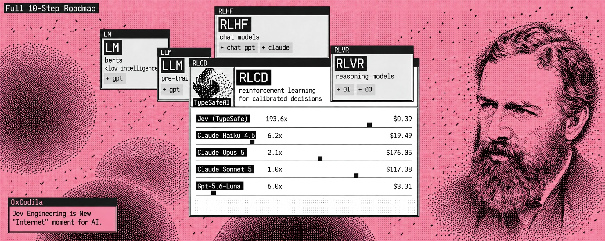
杰文斯悖论（图中人像即杰文斯）说的是：提高某种资源的使用效率，并不会降低其总消耗，反而会推高整体用量。
- 这正是 AI 的全局困境：LLM 与智能体
而 @typesafeai 的 Jev，被设计成能帮你省下 101% 的钱与时间，并提升你用 AI 的效率。
所以相信我——这是你现在就该装上的 2030 配置。
动手前，先订我的 Substack 拿更新信息： https://substack.com/@0xcodila
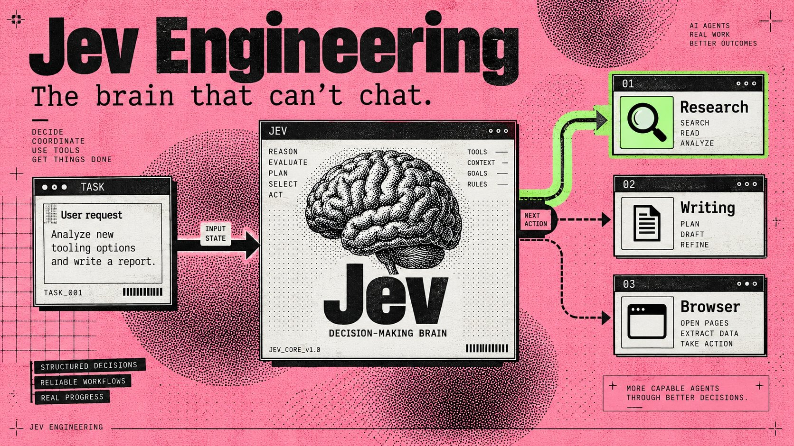
「Browser Use 把 Jev 塞进一个智能体里，用 7 秒、花 $0.0039 就找到了航班。」
嵌入帖：https://x.com/i/status/2100411066966749359
当你回头看「幕僚长」一天在干什么，这就变得有意思了：选一个工人、检查结果、决定要不要继续。每一次分叉，都可能在真正有用的工作开始之前，再烧一次模型调用。
Jev 给这些决策配上了专属模型
你的写作智能体继续写；你的研究智能体继续查。夹在中间的那些小判断，变成一个你可以检查、计价、替换的独立组件。
先从一个独立的任务路由器开始：输入一份工作，让 Jev 选目的地，并把交接件存到本机。
然后再跑 Browser Use 的完整浏览器智能体。（前者只需要一把 API key；浏览器项目需要两把。）
01. 找出智能体里 Jev 能接手的那一段
Jev 是 TypeSafe AI 的 System One 模型：你提供信息与预定义问题，它返回带概率的类型化答案。它不会写简报、不会生成代码，也不会用散文解释推理过程。TypeSafe 发布长文
从一个这样的任务开始：
研究三款新的 AI 智能体工具，并起草明天的简报。把草稿存好，等我审阅。
这个任务里藏着若干决策：资料够不够？下一个工人是谁？草稿能不能送审？
这些才是 Jev 的候选。抓取来源、写段落、存文件，仍归你的工具与生成式模型。像「十步之后强制停下」这种硬规则，则属于代码。
对一个 GrokBot 风格的幕僚长来说，保存好的交接件可以喂给现有工人。把工人接上，放在下面的独立搭建之后；第一次跑通甚至不需要一整支智能体团队。
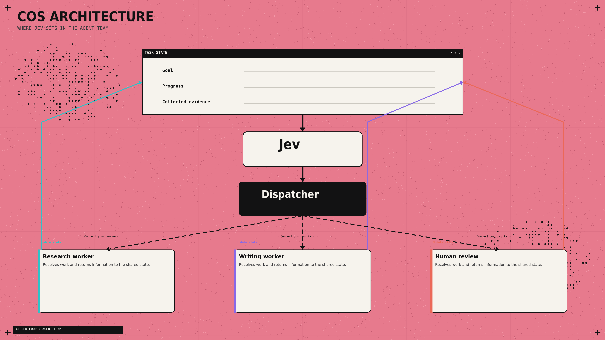
02. 在 Playground 里先做一次决策
- 打开 TypeSafe Playground。如账户需要，先登录并完成开通。
用下面这段作为 state：
Goal: Compare three AI-agent tools in a morning briefing.
Completed work: No sources collected yet.
Available workers: Researcher, Writer.
Constraint: Save drafts for review. Do not publish.加一个 Choice 问题：「下一个该哪个工人行动？」
定义三个选项：research（证据还不够）、write（证据充分，可以起草）、review（请求不清或工作已完成）。
跑一遍。然后把「已完成工作」字段换成真实研究笔记，再对比决策变化。这就是官方 Quickstart 描述的基本交互。
03. 一次性接通 API
你需要一个已开通 API 的 TypeSafe 账户，以及来自密钥设置的 key。调用记在该账户账单上。
安装 Python 3.12 或更新版本，然后在 macOS/Linux 打开 Terminal，或在 Windows 打开 PowerShell。
macOS / Linux：
mkdir jev-starter
cd jev-starter
python3 -m venv .venv
.venv/bin/python -m pip install --upgrade typesafe-sdkWindows PowerShell：
mkdir jev-starter
cd jev-starter
py -3 -m venv .venv
.\.venv\Scripts\python.exe -m pip install --upgrade typesafe-sdk这些命令会创建隔离环境，并安装官方 Python SDK。把密钥放在源码之外；下面的脚本会私下询问。
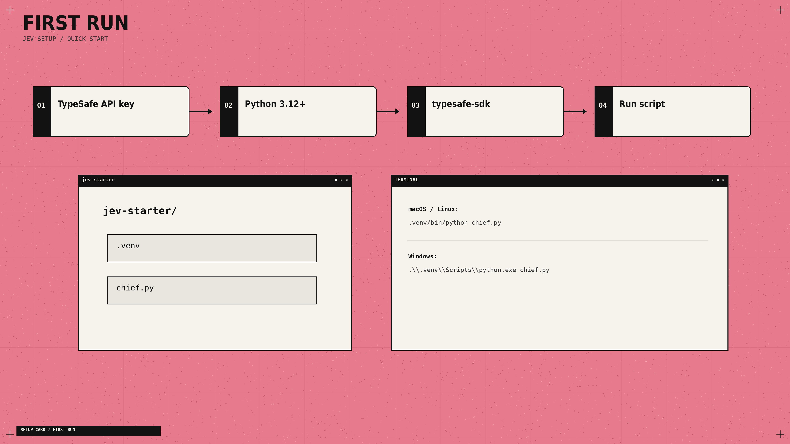
在用编程智能体？若已安装 Node.js/npm，可加上 TypeSafe 官方 skill：
npx skills add typesafe-ai/skills --skill typesafe-ai按提示选择你支持的智能体。skill 提供集成说明；Jev 本身仍通过 API 运行。官方仓库
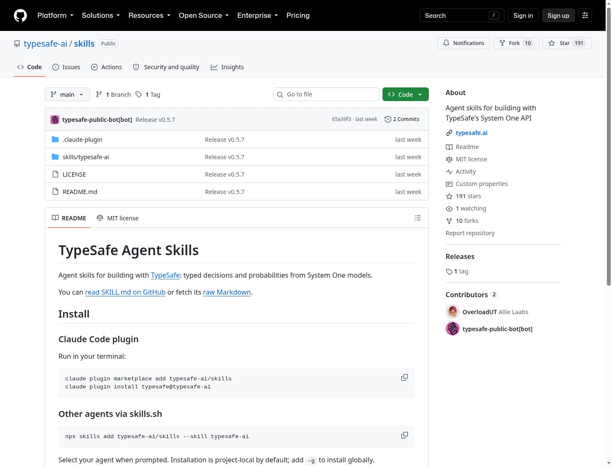
04. 把请求变成一份已保存的交接件
在 jev-starter 里、.venv 之外创建 chief.py。用纯文本编辑器，保存成准确文件名，不要变成 chief.py.txt。
import json
import os
from getpass import getpass
from pathlib import Path
from uuid import uuid4
from typesafe_sdk import Choice, TypeSafeAPIError, TypeSafeClient
if not os.environ.get("TYPESAFE_API_KEY"):
os.environ["TYPESAFE_API_KEY"] = getpass("TypeSafe API key: ").strip()
goal = input("Goal: ").strip()
if not goal:
raise SystemExit("Enter a goal.")
notes = input("Completed work: ").strip() or "Nothing yet."
state = {"goal": goal, "completed_work": notes}
try:
with TypeSafeClient(model="jev-1.13.0") as client:
result = client.system_one(
state=state,
questions={
"next_worker": Choice(
instructions="Choose the next step for a research briefing.",
criteria={
"research": "Collect evidence still needed for the goal.",
"write": "Draft the briefing from sufficient evidence.",
"review": "Goal unclear, outside scope, or work complete.",
},
)
},
)
except TypeSafeAPIError as error:
raise SystemExit(f"API error {error.status}; see Step 8.")
answer = result.choices["next_worker"]
destination = "review"
if answer.choice in {"research", "write"} and answer.confidence >= 0.85:
destination = answer.choice
folder = Path(__file__).resolve().parent / "queue" / destination
folder.mkdir(parents=True, exist_ok=True)
job = folder / f"{uuid4().hex}.json"
payload = dict(state, choice=answer.choice, confidence=answer.confidence,
destination=destination, status="queued")
job.write_text(json.dumps(payload, indent=2, ensure_ascii=False), encoding="utf-8")
print("Saved handoff:", job)macOS/Linux 运行：
.venv/bin/python chief.pyWindows 运行：
.\.venv\Scripts\python.exe chief.py按提示粘贴 API key——终端会隐藏输入。
Goal 填：Compare three AI-agent tools for tomorrow's briefing。Completed work 填：No sources collected yet。
结果：一条带完整路径的 Saved handoff: 消息。打开那个 JSON：里面有请求、进度、Jev 的选择、置信度与目的地。
每次运行都会在 queue/research、queue/write 或 queue/review 下新建文件。这些是本地任务队列；保存的任务等待工人来消费。
API 调用与错误处理遵循 SDK 用法指南。我把初始送审阈值设为 0.85——请用你工作流里的标注样例再调。置信度不是准确率百分比。置信度说明
05. 提出能落到行动的问题
三种答案类型覆盖不同工作：
Jev 提供三种问题类型，各自对应一类决策：
- Choice 从列表中选一项。适合：「下一个谁干？」返回所选选项、概率分布与置信度。
- Score 按你定义的量表评估。适合：「这条来源有多相关？」返回量表上的值，以及概率与置信度。
- Noul 回答是否题。适合：「这个请求需要发布吗？」返回「是」的概率，范围 0 到 1。
定义一个相关性 Score，三段描述：无关、部分相关、直接回答问题。数值结果从 0 到 2，可含小数。Noul 接近 0.5 表示对是否不确定。Score · Noul
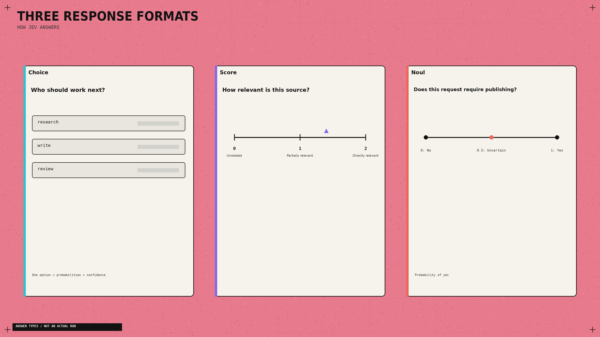
一个有用细节：Jev 看不到你的问题 ID。把字段命名成 safe_to_publish 不会贡献任何指令。把真正要求写进问题，并把每个选项说清楚。Choice 文档
还要提供证据。「研究员做完了」远不如把来源、发现与剩余缺口写清楚。这些字段与原始请求分开。State 文档
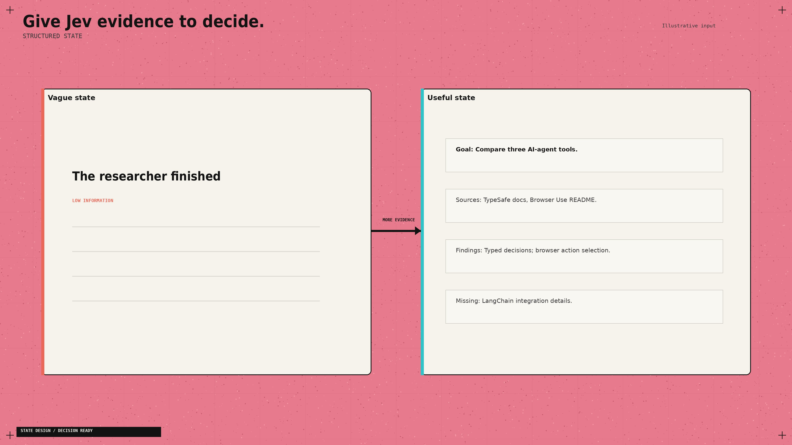
06. 偷师 Browser Use 的最佳点子：重建菜单
浏览器里，可用动作在每次点击后都会变。Browser Use 会根据观察到的控件重建一份新鲜列表，再让 Jev 从中选择。需要填输入框时，才用小 LLM 生成文本。决策实现
把同一设计用到你的幕僚长上：选项只来自当前存在且可用的工人。选研究材料时带上当前来源 ID。工具改了状态之后，刷新选项。
- 否则你的决策模型还在点昨天的菜单。
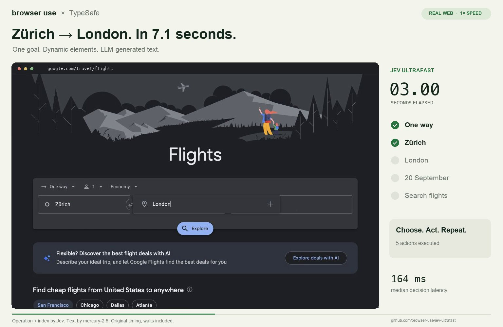
候选很多时：先在代码里滤掉明显不匹配的，给剩余项打分，再在短名单里选。Choice 最多支持 255 个选项；TypeSafe 在发布示例里描述了这种「先打分再选择」的做法。
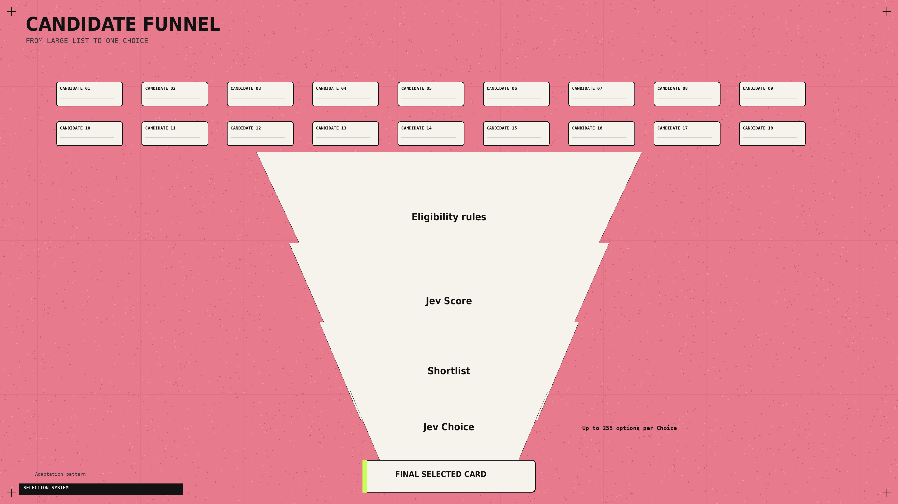
07. 别再为「问题互相等待」付钱
你的调度器可能同时需要：选工人、紧急度分数、批准检查。
若三者都能查看同一份 state，就把它们一起发出去。
TypeSafe 支持并行问题与推测性分支：先问多种可能的下一步，再只用与所选分支相关的答案。
问题之间读不到彼此的答案。若决策依赖一次新搜索，先做搜索。并行评估模式
浏览器例子还暴露了另一个瓶颈。优化后的运行时把浏览器协议调用的中位数从 1,092 降到 101，三组配对任务的中位耗时下降 25%。两边用的是同一批模型。
改动包括：一次读齐页面状态，以及不对无关动画反复做新预测。先检查重复工具调用，再考虑为更快模型买单。性能报告
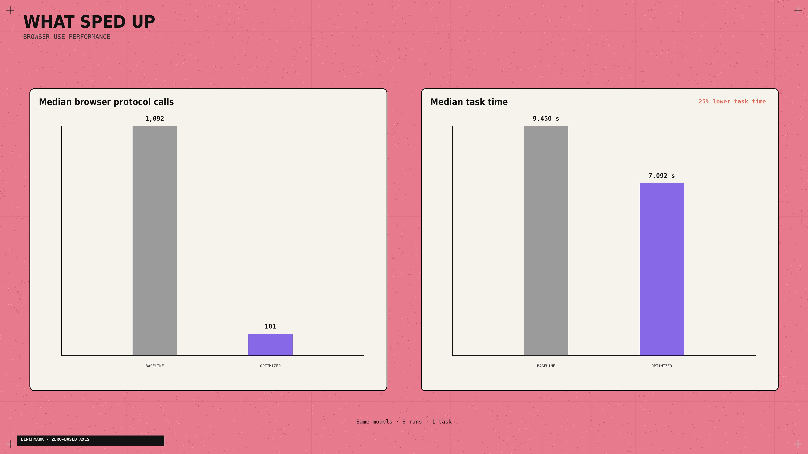
08. 给通宵工作一个停点
做早间简报时，我会允许采集来源与写草稿，然后停在审阅。发布应另做权限检查。
应用还需要：动作上限、花费上限、以及已保存进度。
中断之后，应先检查最后一次完成的动作，再决定是否重做。一个高置信度答案，并不能证明文件已保存或消息已发出。
Browser Use 在 Jev 选出 DONE 之后，会独立核对结果。把这种分离借到你自己的完成检查上。Agent loop
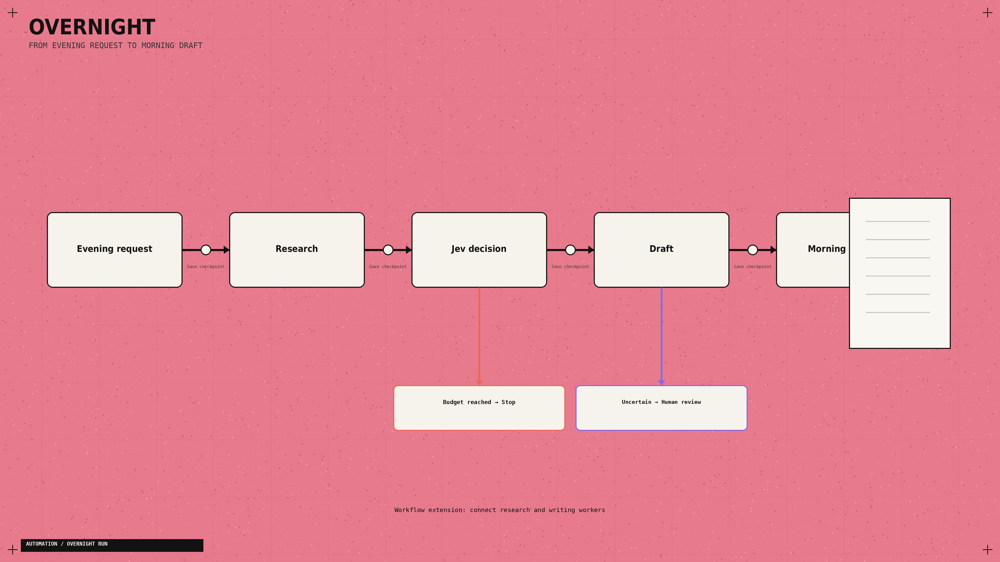
本地路由器跑通后，用这段简报去接现有智能体：
阅读 TypeSafe skill，并检查我的工人接口。把 chief.py 的 JSON 队列接到现有研究与写作处理器。防止重复处理。每步动作后保存进度。加上调用与花费上限、不确定时送审、以及「草稿已存在」的完成检查。发布仍需批准。明确标出缺失的连接器。
若起步失败，按错误选修复：
- Python 命令缺失：完成 Python 安装并重开终端。
- 模块缺失：用同一个
.venv解释器重装 SDK。 - 401：更换 API key 再跑。
- 422：对照粘贴代码检查命名的请求字段。
- 429 / 529：允许退避；若限流或过载持续，稍后再试。
SDK 自带重试；若 API 错误仍在，脚本会停下。API 参考
09. 看清标价真正买到什么
Jev 1.13 定价为每百万输入 token $0.042，不收输出 token 费。若每次决策计费约 1,000 输入 token，则 10,000 次决策的 Jev 推理费约 $0.42。定价
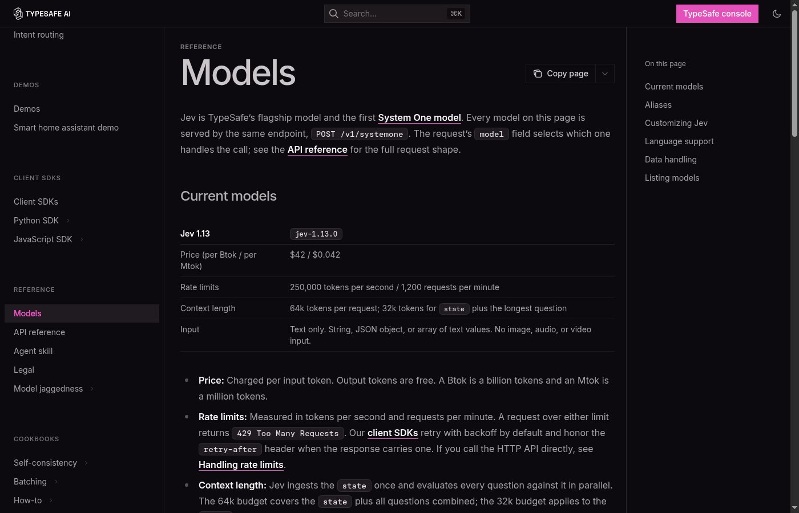
航班演示报出的 $0.0039，对得上记录的 90,558 个 Jev 输入 token，再加上文本助手那部分费用。
浏览器成本不在该计算内。约七秒的计时从初始页面观察之后开始，且不含跑完后的重新核验。
- 所以它找的是航班结果，并不订票。运行测量
另一类负载上，Vercel 的 fx 团队报告相对 GPT-5.6-luna，安全分类大约快 5–18×，准确率也更好。
该对比针对的是分类器，不是整个智能体跑完的时长。原始基准帖
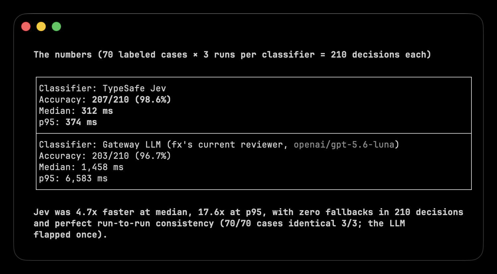
按完成的任务记账。一次便宜却把工人送进错误分支的决策，可能比决策本身更贵。
10. 用法示例
基础搭建完成后，Jev 已经能读任务状态，并在预定义选项间做选择。你只需要决定：自动化哪一个反复出现的决策。
1. 控制浏览器
Browser Use 用 Jev 选择下一步动作与正确页面元素。智能体用 7 秒、$0.0039 找到航班。
嵌入帖：https://x.com/i/status/2100411066966749359
如何复现：跑官方项目，填入 TypeSafe 与 OpenRouter 密钥，再给智能体一个网站与目标。Jev 选动作与目标，浏览器执行决策。
2. 给研究分类
Hassan 用 Jev 给 1,018 篇 AI 论文分类。整次分类花 $0.08，每篇端到端中位延迟 256ms。
嵌入帖：https://x.com/i/status/2100426999546184123
如何复现：把每篇的标题与摘要送给 Jev，把主题定义为 Choice 选项。保存所选类别，把最强论文交给写作智能体。
3. 分拣收件箱
Riley Brown 演示了如何用 Jev 给来信分类，并决定下一步该做什么。
嵌入帖：https://x.com/i/status/2100404532119269426
如何复现：把每封邮件作为 state，加上 reply / research / wait / review 等 Choice 选项。把每个答案接到对应文件夹或邮件智能体。
4. 在模型之间路由任务
LangChain 用 Jev 按任务在更便宜与更强的模型之间做选择。
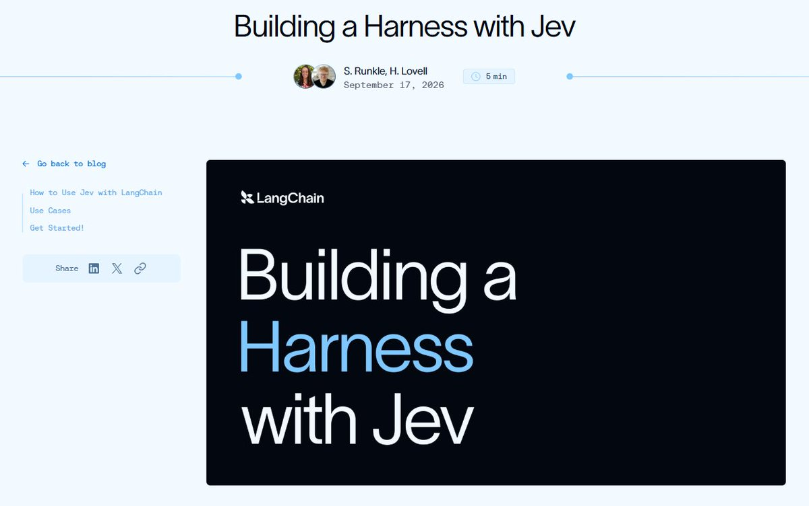
如何复现：接上多个模型，描述各自擅长什么，把进来的请求交给 Jev。简单任务走便宜模型，复杂任务走推理模型。
以及其他案例：
嵌入帖：https://x.com/i/status/2100739055923425589
嵌入帖：https://x.com/i/status/2100694549362553153
范式转移
LLM 负责创造工作 → Jev 决定下一步发生什么。
Jev 不是又一个聊天机器人。
它是一个快速决策层：读取系统当前状态，并在你定义的选项之间做选择。
真正的 alpha 也不是那次 7 秒航班演示，或 $0.08 的论文分类。
真正的 alpha 是意识到：智能体里有多少昂贵的 LLM 调用，其实根本不需要「生成」：
- 让 LLM 去研究、规划、写作
- 让 Jev 去路由、打分、批准或升级
- 让代码去执行决策
这种拆分会改写整条智能体技术栈。
你现在有了搭建步骤、可工作的决策路由器，以及四种真实部署方式。从一个反复出现的决策开始。测量它。然后再替换下一个。
多数构建者会继续把前沿模型的 token，花在每一次是/否、路由与打分上。
少数把「思考」与「决策」分开的人，会以一小部分成本，造出更快的智能体。
下次做智能体之前，先收藏这份手册 → @0xCodila